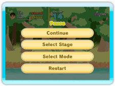
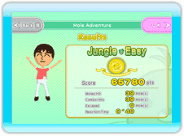
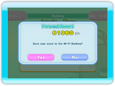
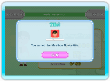
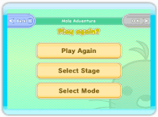

Menú de pausa
Pulsa durante la partida para acceder al menú de pausa.
| "Continue" (Continuar) |
Abandona el menú de pausa y vuelve a la partida. |
| "Select Stage" (Seleccionar escenario) |
Termina la partida actual y vuelve a la pantalla de selección de escenario. Solo está disponible en el modo "Mole Adventure" (La aventura de los topos).
|
| "Select Rules" (Seleccionar normas) |
Termina la partida actual y vuelve a la pantalla de selección de normas. Solo está disponible en el modo "Party Battle" (Batalla por grupos).
|
| "Select Mode" (Seleccionar modo) |
Termina la partida actual y vuelve a la pantalla de selección de modo. |
| "Restart" (Reiniciar) |
Termina la partida actual y comienza de nuevo desde el principio. |

Pantalla de resultados
Cuando la partida termine, podrás comprobar tus estadísticas y clasificación en la pantalla de resultados. Pulsa el botón "OK" (Aceptar) para continuar.

Clasificación de Conexión Wi-Fi de Nintendo
Cuando superes tu mejor puntuación, podrás guardarla en la Clasificación de Conexión Wi-Fi de Nintendo.
Selecciona "Yes" (Sí) para enviar tu puntuación a la Conexión Wi-Fi de Nintendo.
Selecciona "No" para continuar sin enviar la puntuación. Podrás enviarla más tarde si quieres en el modo "Ranking" (Clasificación). Consulta la página 18 para conocer más detalles.

Títulos
Si consigues determinados objetivos en la partida, podrás ganar un título. Puedes ver la lista de títulos que has ganado en la pantalla de información del jugador. Consulta la página 17 para conocer más detalles.

¿Jugar de nuevo?
Por último, usa este menú para decidir qué quieres hacer a continuación.
| "Play again" (¿Jugar de nuevo?) |
Juega otra partida con la configuración actual. |
| "Select Stage" (Seleccionar escenario) |
Vuelve a la pantalla de selección de escenario. Solo está disponible en el modo "Mole Adventure" (La aventura de los topos).
|
| "Select Rules" (Seleccionar normas) |
Vuelve a la pantalla de selección de normas. Solo está disponible en el modo "Party Battle" (Batalla por grupos). |
| "Select Mode" (Seleccionar modo) |
Vuelve a la pantalla de selección de modo. |